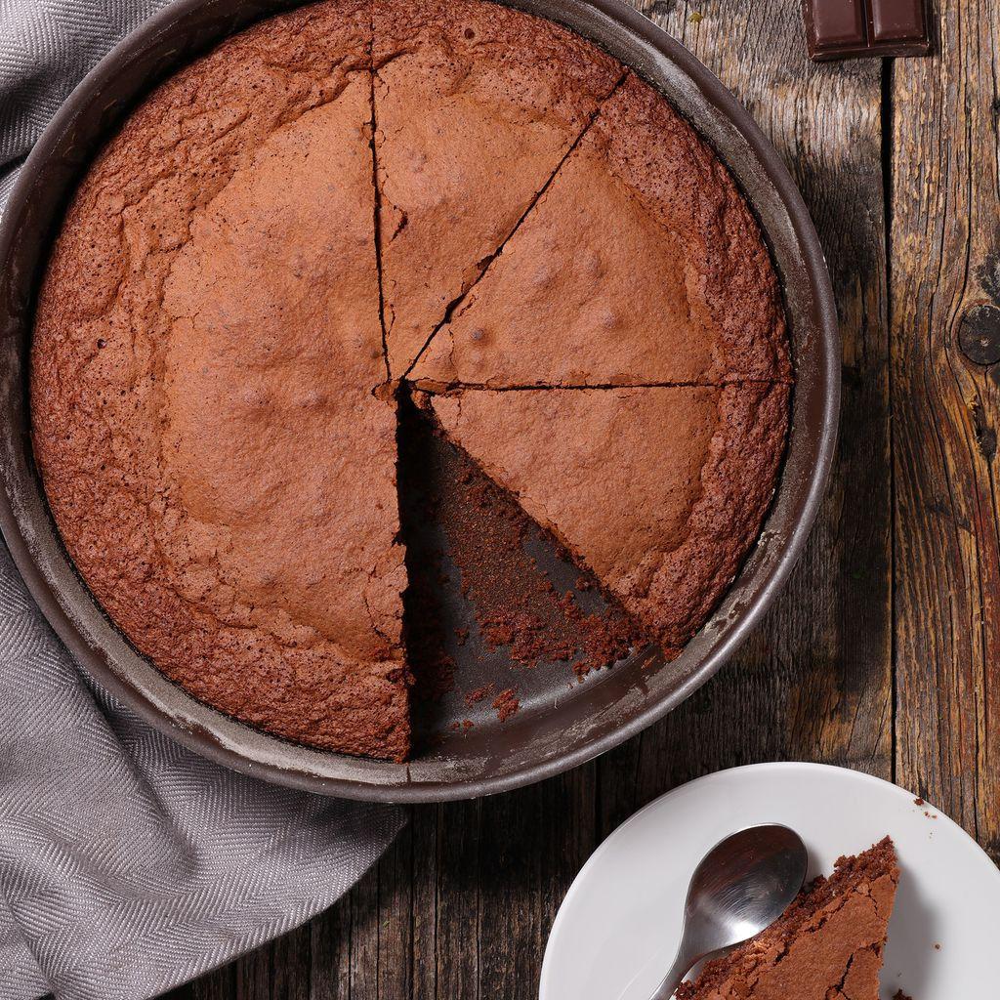

Gâteau au chocolat

Description
Un gâteau au chocolat moelleux et fondant, recette simple et rapide pour un gâteau ravissant petits et grands. Idéal à réaliser en famille.
Ingrédients
- 5 œufs
- 200g chocolat pâtissier
- 200g beurre salé
- 120g sucre
- 3 cuillères à soupe de farine
Étapes
- Préchauffer le four à 180°C en chaleur tournante.
- Faire fondre le chocolat ainsi que le beurre salé au micro-ondes ou à la casserole.
- Mélanger le sucre et les œufs complets dans un saladier.
- Mélanger le tout dans le même saladier et y ajouter la farine petit à petit.
- Mettre dans un moule beurré ou fariné et enfourner pendant 20-25min.
Retour à l’accueil